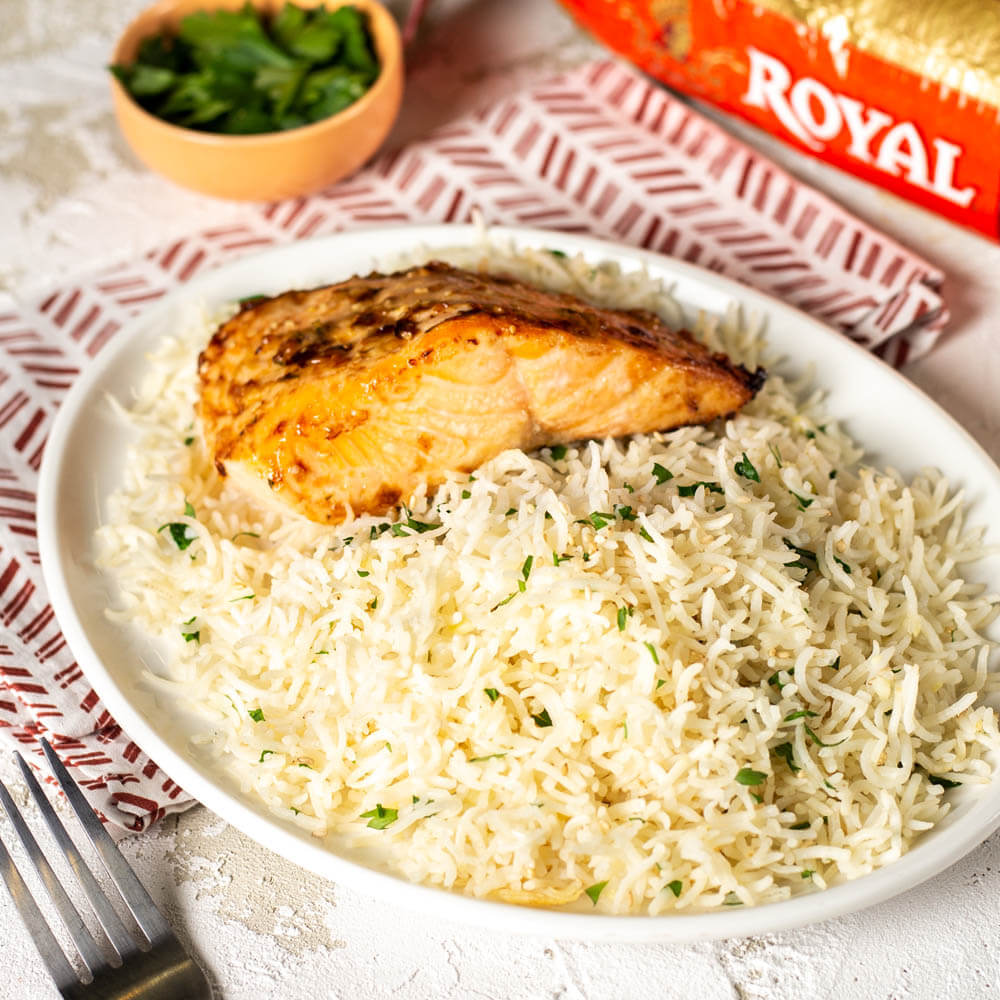

Salmon and Rice

Description
Recipe for a healthy and tasty meal, perfect for all fish lovers that are looking to hit their protein goal!
Ingredients
- 300g salmon filet
- 100g dry basmati rice
- 2TS olive oil
- Your favourite seasonings
- 1 clove of garlic
- 1/2 lemon
Steps
- Season the salmon with the lemon and your seasonings
- Preheat your pan with oil
- In a bigger pan start cooking your garlic in oil
- Add the rice to the pan cooking with garlic
- Add water to the rice and let it cook for 10min
- Place salmon in preheated pan and cook on both sides for about 3min until golden brown